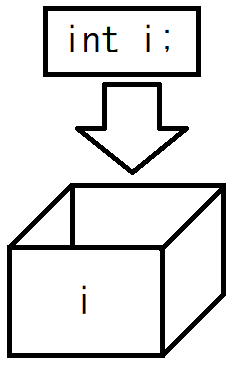
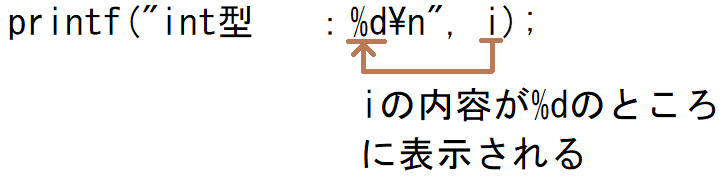
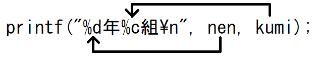

データを入力するためには、入力したデータを覚えておくための「箱」が必要です。
この箱のことを「変数」と呼びます。

変数には扱うデータに応じて、いくつか種類があります。
こういった種類のことを「型」と呼びます。
全てではありませんが、次のようなものがあります。
| 型 | 概要 | 扱える範囲 | メモリ上のサイズ |
|---|
| char | 文字型 | 半角1文字 | 1バイト |
| short | 整数型 | -32,768 ～ 32,767 | 2バイト |
| unsigned short | 整数型 | 0 ～ 65,535 | 2バイト |
int
long | 整数型 | -2,147,483,648
～ 2,147,483,647 | 4バイト |
unsigned int
unsigned long | 整数型 | 0 ～ 4,294,967,295 | 4バイト |
| float | 単精度浮動小数点型 | 3.4E-38 ～ 3.4E+38 | 4バイト |
| double | 倍精度浮動小数点型 | 1.7E-308 ～ 1.7E+308 | 8バイト |
※「文字列」や「全角文字」を扱う場合は、ちょっと特別な方法を使います。
これに関しては後で説明します。
変数を使用するには、まずその変数を「宣言」が必要です。
要は「箱を用意する」ということになります。
変数の宣言は次のように宣言します。
| 型 | 宣言の方法 |
|---|
| char型 | char c; |
| short型 | short s; |
| int型 | int i; |
| long型 | long l; |
| float型 | float f; |
| double型 | double d; |

変数の名前（変数名）の命名には次のルールがあります。
- 「アルファベット」「数字」「_」を変数名に使用することができる。
- 頭文字に数字は使用できない。
- 予約語と同じ名称は使用できない。
- アルファベットの大文字と小文字は区別される。
予約語とは、C言語で最初から使われているキーワードになります。
例えば今まで出てきた「main」「int」「char」「printf」「double」といったものが予約語となります。
これらと同じ名称は使えません。
変数を宣言すると、中には適当な値が入っています。
※0とか決まった値ではなく、何が入っているのかはわかりません。
そのため、変数は初期化する必要があります。
変数の初期化は次のように行います。
| 型 | 初期化方法 |
|---|
| char型 | char c = 'A'; |
| short型 | short s = 0; |
| int型 | int i = 0; |
| long型 | long l = 0L; |
| float型 | float f = 0.0f; |
| double型 | double d = 0.0; |
long型は「0L」、float方は「0.0f」double型は「0.0」と特殊な記載をしていますね。
C言語は数値自体も型に準拠(？)しています。
なので、「0L」は「long型の0」、「0.0」は「double型の0」となります。
これについては「こう記述しないとエラーになる」というわけではないですが、この記載をお勧めします。
理由としては、後で説明します。
変数を宣言した後に値を代入することができます。
変数の代入は次のように行います。
| 型 | 代入方法 |
|---|
| char型 | c = 'B'; |
| short型 | s = 1; |
| int型 | i = 2; |
| long型 | l = 3L; |
| float型 | f = 4.5f; |
| double型 | d = 6.7; |
変数はprintf関数で画面に表示することができます。
各変数の型を表示するプログラムです。
#include <stdio.h>
int main()
{
char c = 'A';
short s = 0;
int i = 1;
long l = 2L;
float f = 3.4f;
double d = 5.6;
printf("char型 ：%c\n", c);
printf("short型 ：%d\n", s);
printf("int型 ：%d\n", i);
printf("long型 ：%ld\n", l);
printf("float型 ：%f\n", f);
printf("double型：%lf\n", d);
return 0;
}
|
int型を例にすると、文字列中の「%d」の箇所に変数の値が表示されます。
変数の型ごとに、次の文字が変数の値に置き換わります。
| 型 | 値が表示される文字 |
|---|
| char型 | %c |
| short型 | %d |
| int型 | %d |
| long型 | %ld |
| float型 | %f |
| double型 | %lf |
そして、文字列の後ろに「, (変数)」とすることによって、
その変数の値が表示されます

また、複数の変数を同時に表示することも可能です。
#include <stdio.h>
int main()
{
int nen = 3;
char kumi = 'B';
printf("%d年%c組\n", nen, kumi);
return 0;
}
|
この場合は、前から順番に割り当てられますので、「3年B組」と表示されます。

|